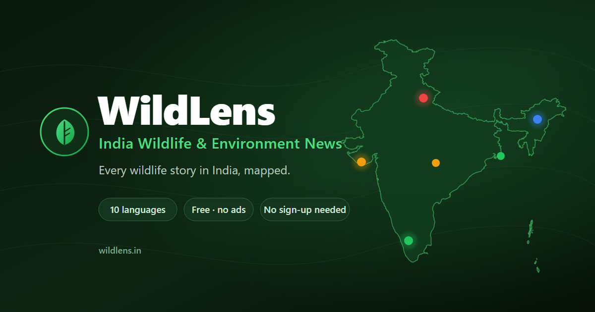

Web portal
Wildlife and environment news from across India, pinned to where it happened, including tiger and elephant sightings, wildlife crime, forest fires and human-wildlife conflict. It draws on national outlets and regional press in ten languages. Free, no sign-up.

WildLens is a free, interactive map of India's wildlife and environment news. Instead of scrolling through dozens of news sites, you see where stories are actually happening — tiger and elephant sightings, poaching and wildlife crime, forest fires, human-wildlife conflict, and conservation news — as pins across the country. Tap any pin to read the headline and source, then open the full article. It pulls from national outlets and regional-language press in ten Indian languages, so stories that never reach the English national media still show up. It's for anyone who cares about India's wild places: conservationists, researchers, students, journalists, forest staff, and curious nature lovers. Free, no sign-up, updated through the day.
India's wildlife news is scattered. A leopard rescue in Kerala, a poaching bust in Assam, a court ruling on a forest corridor — each sits on a different website, often in a different language, and disappears from the feed within a day. There was no single place to see it all, let alone see where it was happening. Regional-language reporting was the hardest to reach: rich, local, and almost invisible to anyone searching in English. WildLens brings it together on one map, translated and placed in context, so the bigger picture is finally visible at a glance.
WildLens runs on a lightweight, fully automated pipeline — no manual curation. Every few hours it gathers wildlife and environment news from public news feeds, filters for relevance, identifies the most specific location in each story, places it on the map, and (for regional-language reports) translates the headline to English. The whole thing is built to run on free, open infrastructure, which is why it can stay free and independent. It's a solo project, designed to be reliable and low-maintenance rather than flashy.
News comes from publicly available feeds published by Indian and regional news outlets; WildLens links back to each original article, and full stories always belong to their publishers. Map imagery is provided by Esri and OpenStreetMap contributors. The platform stores only the minimum needed to place a story on the map — headline, source, date, link, and location — and collects no personal data from visitors beyond privacy-respecting, aggregate analytics. Sources and map providers are credited on the map and in the privacy policy.
WildLens is actively maintained and growing — more sources, better coverage, and deeper ways to understand what the news is telling us are all in the works. There's more planned beneath the surface than the map shows today. If you'd like to suggest a source, report an issue, or explore working together, get in touch at nikunj@wildlens.in.